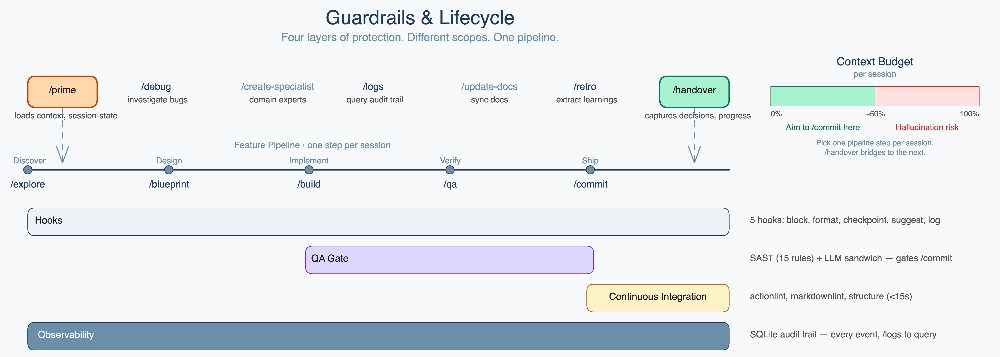

GUARDRAILS

Runtime hooks (5 hooks, 30 patterns)
Block destructive commands before execution. Log every tool call to SQLite.
QA gate (15 SAST rules, OWASP)
Clean-context reviewer after every /build. APPROVED verdict gates /commit.
CI pipeline (under 15 seconds)
YAML syntax, markdown lint, structure checks on every push. /commit waits for green.
Observability
SQLite audit trail. /logs to query. /debug for systematic root cause investigation.
Built-in observability: session logging to SQLite, agent tracing via /logs, CI/CD hooks — see docs for details.